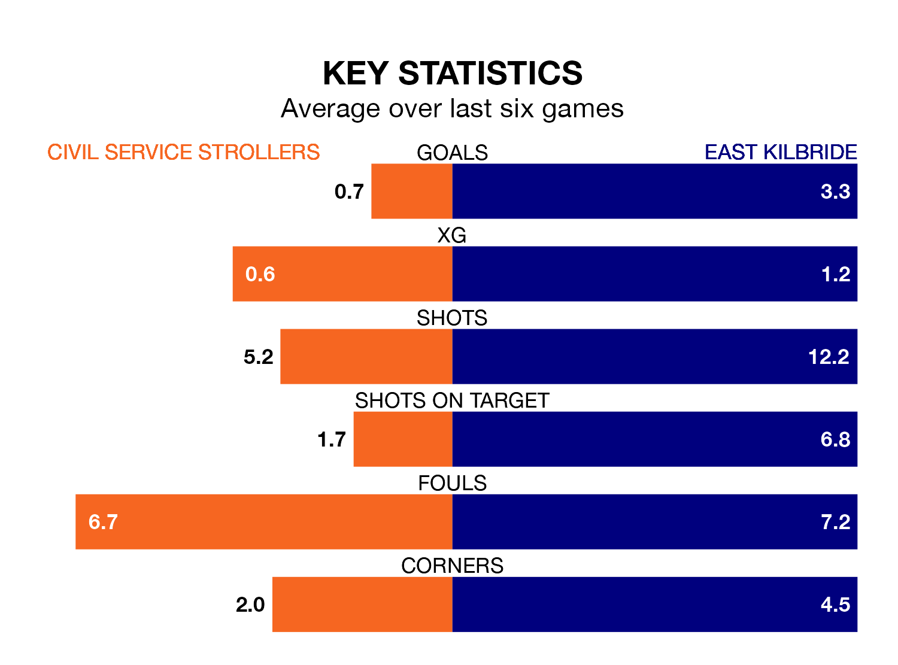

East Kilbride are strong favourites to take all three points despite Civil Service Strollers's home advantage in Wednesday's late match at the Civil Service Sports Ground.
*Betting Company* are offering odds of 1.18 on East Kilbride sealing the win, with the visitors sitting first in the Lowland Football League table.
Civil Service Strollers, who are 10th in the league and 27 points behind the Kilby, are priced at 10 to win. A draw is set at 6.
With 89 goals in 30 games so far this season, East Kilbride are the league's highest scorers with 3.0 goals per game. And they are conceding fewer than average, letting in 37 goals at a rate of 1.2 per game.
Civil Service Strollers, meanwhile, are below average scorers, with 1.4 goals per game, compared to a league average of 1.7. They have conceded 1.3 goals per game.
In the last 10 years, Civil Service Strollers and East Kilbride have played each other on 11 occasions. Civil Service Strollers won three of them, East Kilbride seven, and they drew once.
On average, Civil Service Strollers scored 0.7 goals and the Kilby 1.8 in those matches.
Their last meeting was on September 30, when East Kilbride won 2-0 at home.
The hosts are in bad form in the Lowland Football League, with one win and a draw from their last six games.
With four wins and two losses over that period, the Kilby's form is much better – they have taken 12 points from 18, compared to Civil Service Strollers's four.
Civil Service Strollers's last match was on March 30, a 1-0 win against Albion Rovers.
East Kilbride beat BSC Glasgow 6-1 last time out, on March 24.
Updated: 11:20 (UTC), 09/04/24